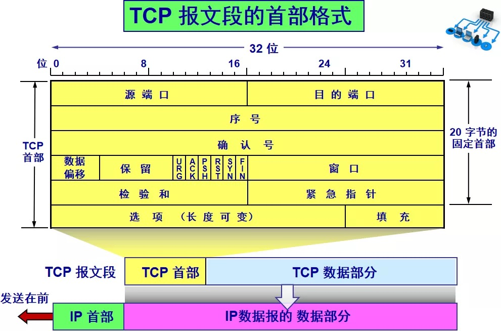
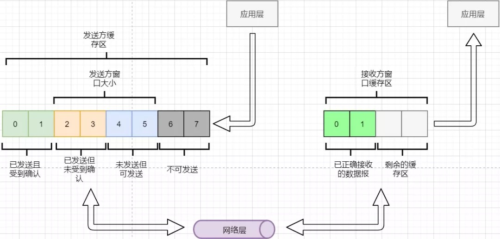
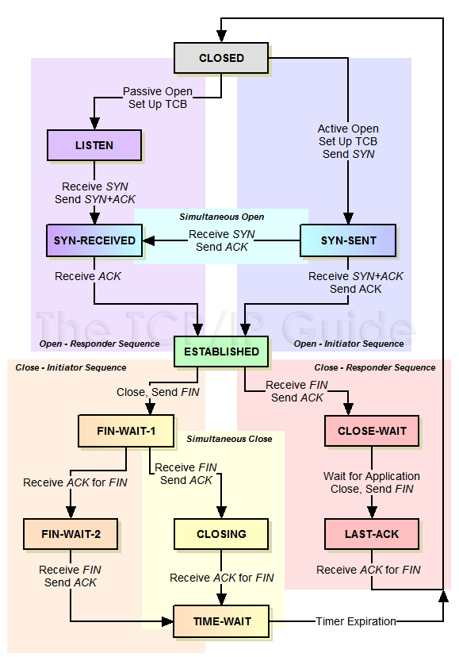
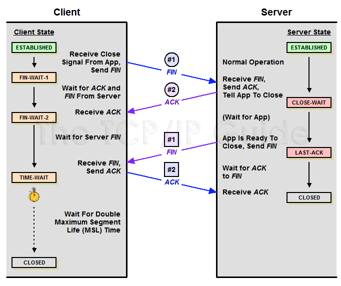
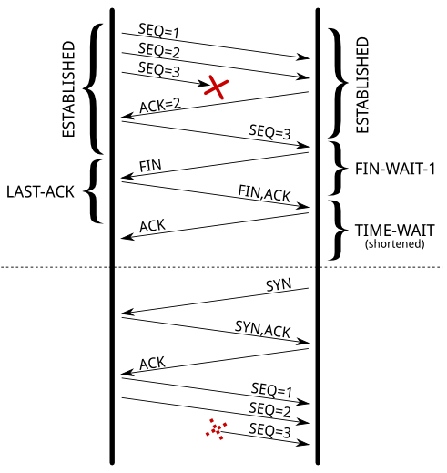
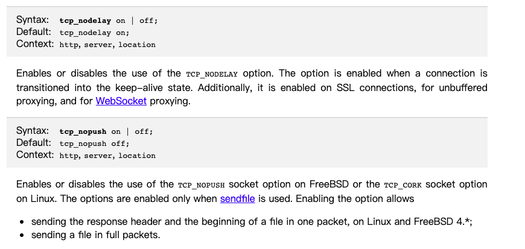
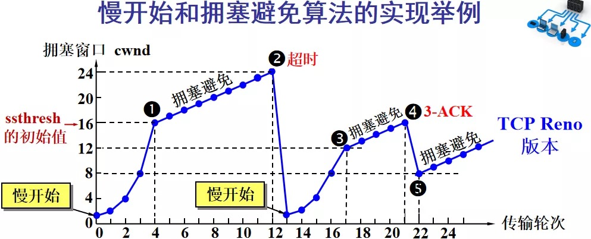

概述
- 做了很多年运维工作, 网上也看了许许多多技术文章.自己面试别人, 也很喜欢问TCP相关的问题.
- 有感而发, 总结一下TCP这块的知识, 给大家做一个参考.
- 学习TCP的四个重点：
面向连接、可靠传输原理、流量控制和拥塞控制.
TCP基础部分
先来看一下TCP报头吧
来两张图, 给大家一个清晰的认识.

- 每个字段的含义这里粗略介绍下
-
- 源、目标端口号字段：各占16比特。TCP协议通过使用
端口来标识源端和目标端的应用进程。端口号可以使用0到65535之间的任何数字，但是这些端口号已经被分为公认端口、注册端口和动态/私有端口.
- 源、目标端口号字段：各占16比特。TCP协议通过使用
MSS和MTU的概念
- MTU: Maxitum Transmission Unit 最大传输单元. 通常是1500字节.
- MSS: Maxitum Segment Size 最大分段大小
由于以太网EthernetII最大的数据帧是1518Bytes，刨去以太网帧的帧头（DMAC目的地址MAC48bit=6Bytes+SMAC源MAC地址48bit=6Bytes+Type域2bytes）14Bytes和帧尾CRC校验部分4Bytes（这个部门有时候大家也把它叫做FCS），那么剩下承载上层协议的地方也就是Data域最大就只能有1500Bytes. 这个值我们就把它称之为MTU, 也就是数据链路层单次最多能够承载的数据量为1500字节.
MSS就是TCP数据包每次能够传输的最大数据分段。为了达到最佳的传输效能TCP协议在建立连接的时候通常要协商双方的MSS值，这个值TCP协议在实现的时候往往用MTU值代替（需要减去IP数据包包头的大小20Bytes和TCP数据段的包头20Bytes）所以往往MSS为1460.
可靠传输原理
可靠传输原理的重点总结一下有：连续ARQ、滑动窗口、超时重传、累积确认、选择确认
- 通过连续ARQ协议与发送-确认回复模式来保证每一个数据包都到达接收方
- 通过给字节编号的方法，来标记每一个数据是属于重传还是新的数据
- 通过超时重传的方式，来解决数据包在网络中丢失的问题
- 通过滑动窗口来实现流量控制
- 通过累积确认+选择确认的方法来提高确认回复与重传的效率
滑动窗口的概念
- 1 tcp报文头部里面，为什么出现Window字段?
为了提升传输效率，本来发送方发一个报文，接收方确认之后，发送方才能继续下一个报文。现在接收方有了buffer，发送方可以连续发送几个报文，接收方先存在buffer里面， 再给发送方一个确认。这就是连续ARQ, 会大大的加快传输速度。当然Window的大小是在传输过程中，随时进行调整的。
-
2 为什么会出现Window Scaling(窗口缩放比例)？？
因为随着网络的发展，带宽越来越大，最早的Window字段只有16为, 最多能够表示2^16次方，即65535字节。 如果接收方的buffer大小超过65535字节，那么多余的部分也用不到，因为无法告知发送方。 因此出现了缩放比例字段，用来告知发送方，我的buffer大小，是Window字段的多少比例（通常是几十倍到几百倍） 因此，数据传输就可以大大加快了。
-
3 Window Scaling的值，是在SYN包里面指定的，并且在整个连接的过程中，无法被改变。
-
- Window Size的值，在整个连接持续的过程中，可以被改变, 而且都是操作系统自动做的事情。
-
- 也就是说
Window Size * Window缩放比例＝socket使用的buffer大小。
- 也就是说
-
- socket是用户空间进程用的，那么它自然大一些好，让应用层可以有更充足的时间处理。当然它可以申请的buffer大小，必然要受到内核控制，内核通过设置内核参数去控制。 我们来看下接收和发送时Buffer大小相关的内核参数.
| 内核参数 | 中文说明 | 常用优化技能 |
|---|---|---|
| net.core.rmem_default = 262144 | socket的接收buffer,默认为256KB | |
| net.core.rmem_max = 4194304 | socket的接收buffer,最大为4MB | |
| net.ipv4.tcp_rmem = 4096 87380 16777216 | 内核自动帮忙调整的接收buffer的大小, 有3个值, 最左边是最小值, 中间是默认值, 右边是最大值. | 其中中间的默认值,会被rmem_default覆盖, 右边的最大值会被rmem_max覆盖 |
| net.core.wmem_default = 2097152 | socket的发送buffer,默认为2MB | |
| net.core.wmem_max = 16777216 | socket的发送buffer,最大为16MB | |
| net.ipv4.tcp_wmem = 4096 65536 16777216 | 内核自动帮忙调整的发送buffer的大小, 有3个值, 最左边是最小值, 中间是默认值, 右边是最大值. | 其中中间的默认值,会被wmem_default覆盖, 右边的最大值会被wmem_max覆盖 |
流量控制
用图说明下滑动窗口的工作过程.

- 发送方需要根据接收方的缓冲区大小，设置自己的可发送窗口大小，处于窗口内的数据表示可发送，之外的数据不可发送。
- 当窗口内的数据接收到确认回复时，整个窗口会往前移动，直到发送完成所有的数据
在TCP的首部有一个窗口大小字段，他表示接收方的剩余缓冲区大小，让发送方可以调整自己的发送窗口大小。通过滑动窗口，就可以实现TCP的流量控制，不至于发送太快，导致太多的数据丢失。
连续ARQ带来的第二个问题是：网络中充斥着和发送数据包一样数据量的确认回复报文，因为每一个发送数据包，必须得有一个确认回复。提高网络效率的方法是：累积确认 。接收方不需要逐个进行回复，而是累积到一定量的数据包之后，告诉发送方，在此数据包之前的数据全都收到。例如，收到 1234，接收方只需要告诉发送方我收到4了，那么发送方就知道1234都收到了。
第三个问题是：如何处理丢包情况。在停止等待协议中很简单，直接一个超时重传就解决了。但，连续ARQ中不太一样。例如：接收方收到了 123 567，六个字节，编号为4的字节丢失了。按照累积确认的思路，只能发送3的确认回复，567都必须丢掉，因为发送方会进行重传。这就是GBN（go-back-n) 思路。
但是我们会发现，只需要重传4即可，这样不是很浪费资源，所以就有了：选择确认(SACK) 。在TCP报文的选项字段，可以设置已经收到的报文段，每一个报文段需要两个边界来进行确定。这样发送方，就可以根据这个选项字段只重传丢失的数据了。
tcp连接建立和断开过程
- 来一张图说明一下连接建立和断开的过程，以及2端Socket的状态变化

Timewait状态的作用
- 首先明确Timewait状态, 是主动断开连接的那一方会出现的, (Client或者Server都可以)
- MSL（Max Segment Lifetime)为最大报文生存时间, 根据RFC 793定义, 是2分钟.
-
Timewait状态持续的时间要大于等于 2 * MSL。 
-
1 第一个作用是避免上一个连接延迟到达的数据包被下一个连接错误接收。如下图所示：

同一个client和server, 在一段时间内 4元组一样 (client_ip,client_port,server_ip,server_port) 如果没有timewait状态, 每次主动断开连接的那一方很快就关闭了连接, 那么假设下一次连接处于ESTABLISH状态时，之前被丢失的报文传过来了,就有可能被错误地接收, 从而影响现有连接. 如果有timewait状态, timewait是要大于等于2MSL的, 那么就不可能有报文会被新连接接收.
- 2 第二个作用: 确保被动关闭的那一方可以正常关闭连接.
假设主动断开连接的这一方，发给对方的最后一个ACK丢了, 此时被动断开连接的那一方一直处于LAST-ACK状态, 他没有收到最后一个ACK, 过段时间会重发之前的FIN报文。如果主动断开的这一方没有Timewait状态，此时已经是CLOSED状态了, 那么会直接回复一个RST报文, 这样被动断开连接的这一方就会收到一个错误.
- 总结: 2个作用，一个作用是防止数据延迟而引发错误，另一个作用是防止ACK丢失而引发错误.
Timewait其他小知识
- Linux Socket的Timewait时间可以修改吗? 不可以. 因为在内核代码里已经写死了这个时间为60秒.
include/net/tcp.h
121:#define TCP_TIMEWAIT_LEN (60*HZ) /* how long to wait to destroy TIME-WAIT
相关的内核参数
| 内核参数 | 说明 | 备注 |
|---|---|---|
| net.ipv4.tcp_fin_timeout=30 | 表示的是一个Linux socket对象，处于FIN-WAIT-2状态的最大时间 | 参考 |
| net.ipv4.tcp_timestamps = 1(可选值:0、1、2) | 该参数用于设置使用时间戳作为序列号，通过这样的设置可以避免序列号被重复使用.(参考RFC 1323) | 官方文档说明 |
| net.ipv4.tcp_tw_reuse = 1 | Allow to reuse TIME-WAIT sockets for new connections when it is safe from protocol viewpoint. Default value is 0. It should not be changed without advice/request of technical experts.(允许重用处于Timewait状态的socekt,来新建tcp连接). 只有当net.ipv4.tcp_timestamps = 1，net.ipv4.tcp_tw_reuse = 1 两个选项同时开启时，tcp_tw_reuse 才会有效，并且只有当 socket 距离上次收到数据包已经超过1秒时，端口才会被重用 | 这个参数如果要介绍的话,可以写一整篇文档了. 参考 主要作用是本地端口不够用时, 复用处于Timewait状态的socket. |
| net.ipv4.tcp_tw_recycle = 1 | Enable fast recycling TIME-WAIT sockets. Default value is 0. It should not be changed without advice/request of technical experts.会快速回收 TIME_WAIT 状态的 socket 。注意只有当 tcp_timestamps 和 tcp_tw_recycle 都开启时，才会快速回收 | 内核4.12版本去掉这个参数 |
| net.ipv4.ip_local_port_range = 32768 60999 | 主动连接方（客户端）会占用本地端口, 可以通过调整该参数来增加本地端口的选择范围 |
Nagle’s Algorithm(Nagle算法)
为什么会有Nagle算法
TCP/IP协议中，无论发送多少数据，总是要在数据前面加上协议头, TCP header 占 20 bytes， IPv4 header 占 20 bytes，若傳送的資料太小， TCP/IPv4 headers 造成的 overhead (40bytes) 並不划算。想像傳送資料只有 1 byte，卻要另外傳 40 bytes header，這是很大的浪費。若網路上有大量小封包，會占去網路頻寬，可能會造成網路擁塞.
於是有了 Nagle’s Algorithm，用來避免產生大量的小封包。
Nagle算法的中心思想
-
Nagle算法的基本定义是
任意时刻，最多只能有一个未被确认的小段。 所谓小段，指的是小于MSS尺寸的数据块，所谓未被确认，是指一个数据块发送出去后，没有收到对方发送的ACK确认该数据已收到。
TCP_NODELAY、Delayed ACK机制、TCP_NOPUSH
TCP_NODELAY
-
默认情况下，发送数据采用Nagle 算法。这样虽然提高了网络吞吐量，但是实时性却降低了，在一些交互性很强的应用程序来说是不允许的，使用TCP_NODELAY选项可以禁止Nagle 算法. 此时，应用程序向内核递交的每个数据包都会立即发送出去, 也就是socket send buffer里的数据会被立即发出.
-
了解下Nginx的TCP_NODELAY

Delayed ACK机制
Nagle’s Algorithm 和 Delayed ACK 机制， 在Linux上都是默认开启的.
Delayed ACK机制是这样:
查询RFC1122的 4.2.3.2 When to Send an ACK Segment 得知 `
4.2.3.2 When to Send an ACK Segment
A host that is receiving a stream of TCP data segments can
increase efficiency in both the Internet and the hosts by
sending fewer than one ACK (acknowledgment) segment per data
segment received; this is known as a "delayed ACK" [TCP:5].
A TCP SHOULD implement a delayed ACK, but an ACK should not
be excessively delayed; in particular, the delay MUST be
less than 0.5 seconds, and in a stream of full-sized
segments there SHOULD be an ACK for at least every second
segment.
`
This process, known as delayed ACKing [RFC1122],typically causes an ACK to be generated for every other received
(full-sized) data packet. In the case of an isolated TCP
packet (i.e., where a second TCP packet is not going to arrive
anytime soon), the delayed ACK policy causes an acknowledgement for
the data in the isolated packet to be delayed up to 200
milliseconds of the receipt of the isolated packet (the actual
maximum time the acknowledgement can be delayed is 500ms [RFC1122],
but most systems implement a maximum of 200ms
- 重點:
-
- 通常最多延遲 200ms，RFC 規定不能超過 500ms。
-
- 每收到兩個 full-sized packet，一定要回一次 ACK。
Linux 的实现是在 __tcp_ack_snd_check()函数，規則是以下其中一個條件滿足就會送出 ACK - 收到且還沒 ACK 的資料超過 MSS (用發送端的 MSS 計算)，並且應用層讀取資料速度夠快。 - 在 quickack mode: 應用層可以強迫啟用這個模式。 - 收到 out-of-order 資料，要馬上通知發送端收到的部份 (用 SACK)，避免重傳。
Delayed ACK的好处
- 节约发送的ACK报文数量.
Delayed ACK如何影响TCP 4次挥手过程
- 正常的挥手流程是这样的
1 client: FIN (will not send more)
2 server: ACK (received the FIN)
… server: sends more data…, client ACKs these data
3 server: FIN (will not send more)
4 client: ACK (received the FIN)
If the server has no more data to send it might close the connection also. In this case steps 2+3 can be merged, e.g. the server sends a FIN+ACK, where the ACK acknowledges the FIN received by the client. 也就是说如果服务器端在客户端发出FIN以后，如果有数据要发送，需要先ACK这个FIN，然后再进行数据发送。但是如果服务器端没有更多数据发送，也要关闭连接的情况下，很可能ACK包就跟随FIN一起发出。其中ACK为确认客户端的FIN包。
Linux上如何关闭Delayed ACK机制
TCP_QUICKACK (since Linux 2.4.4) Enable quickack mode if set or disable quickack mode if cleared. In quickack mode, acks are sent immediately, rather than delayed if needed in accordance to normal TCP operation. This flag is not permanent, it only enables a switch to or from quickack mode. Subsequent operation of the TCP protocol will once again enter/leave quickack mode depending on internal protocol processing and factors such as delayed ack timeouts occurring and data transfer. This option should not be used in code intended to be portable.
- 注意TCP_QUICKACK选项仅仅适用于Linux平台, 其他平台不一定支持.
TCP_NOPUSH
Linux本身并没有提供TCP_NOPUSH选项, 该选项是NGINX官方给出的. 因为这个选项和TCP_NOPUSH太像了, 所以放到这里一起讲.- 在Nginx中， 如果你启动用了Sendfile选项, 并且开启了TCP_NOPUSH选项,那么会使得
-
- sending the response header and the beginning of a file in one packet, on Linux and FreeBSD 4.*;(头部使用一个报文)
-
- sending a file in full packets.(文件的数据部分采用MSS大小发送)
TCP拥塞控制
拥塞控制考虑的是：避免网络过分拥挤导致丢包严重，网络效率降低.
拥塞控制的解决方法是流量控制，流量控制的实现是滑动窗口，所以拥塞控制最终也是通过限制发送方的滑动窗口大小来限制流量 。当然，拥塞控制的手段不只是流量控制，导致拥塞的因素有：路由器缓存、带宽、处理器处理速度等等。提升硬件能力（把4车道改成8车道）是其中一个方法，但毕竟硬件提升是有瓶颈的，没办法不断提升，还是需要从tcp本身来增加算法，解决拥塞。
拥塞控制的重点有4个：慢开始、快恢复、快重传、拥塞避免。

Y轴表示的是发送方窗口大小，X轴表示的是发送的轮次（不是字节编号）。
- 最开始的时候，会把窗口设置一个较小的值，然后每轮变为原来的两倍。这是慢开始。
- 当窗口值到达ssthresh值，这个值是需要通过实时网络情况设置的一个窗口限制值，开始进入拥塞避免，每轮把窗口值提升1，慢慢试探网络的底线。
- 如果发生了数据超时，表示极可能发生了拥塞，然后回到慢开始，重复上面的步骤。
- 如果收到三个相同的确认回复，表示现在网络的情况不太好，把ssthresh的值设置为原来的一半，继续拥塞避免。这部分称为快恢复。
- 如果收到丢包信息，应该尽快把丢失的包重传一次，这是快重传。
- 当然，窗口的最终上限是不能无限上涨的，他不能超过接收方的缓存区大小。
通过这个算法，就可以在很大程度上，避免网络拥挤。
Linux下如何查看当前的拥塞控制算法(CCA)
BBR算法
传统 TCP 拥塞算法的问题
传统的 TCP 拥塞算法已经非常古老了，现在的网络环境已经和最初设计算法时的网络环境完全不同了，因此算法已经越来越不适应现在的环境。最主要的几个问题包括：
慢启动过程太慢。
慢启动过程太慢，导致小文件传输（例如 HTTP 网页传输）不能充分利用带宽。
关于慢启动太慢的问题，这些年来由 Google 牵头也做了不少调整。
BBR 在此也做了一些优化，将慢启动改成了两分查找法，这样理论上能够加快 BBR 的慢启动过程。
使用丢包作为判断拥塞的唯一依据。
链路层越来越复杂，种类越来越多（WiFi，4G 等链路层在这些年越来越普遍），带宽越来越大，传输距离越来越远，导致非拥塞原因导致的丢包越来越多（例如信号衰减导致丢包，传输过程发生错误包校验不通过导致丢包等）。
传统的拥塞算法在这种情况下错误地将滑动窗口调小，严重的减慢包重传的速率，导致丢包导致的网络质量劣化被极大地放大。
如果一个网络因为非拥塞原因（例如 4G 信号较弱）导致丢包 10%，那么将会有 10% 的包被重传，如果滑动窗口不变的话那么理论上来说传输速度会变为不丢包网络的 90% 左右。但是实际上由于滑动窗口的改变，10% 的丢包往往会导致总的传输速度降低为几乎为零，网络近乎于不可用。
这个问题在移动网络开始广泛使用（也就是最近几年的时间）才变得越来越严重。之前解决这个问题最好的算法是 Vegas 和 LEDBAT，但是这两个算法有个很大的缺点，就是在和基于丢包的算法共享网络，发生竞争的情况下，往往会被饿死，导致无法推广，目前仅仅用于一些优先级较低的网络环境。Vegas 算法目前主要用于 BT 传输，苹果使用 LEDBAT 算法用于软件更新和下载。
没有考虑到链路层 buffer 的问题。
在链路层，网络的带宽并不是平稳的一成不变的，而是时常会出现瞬发的传输高峰。为了这些传输高峰扩大带宽是没有性价比的，同时增加少量延时在绝大多数情况下都比丢包代价要小得多，因此链路层普遍的做法是使用 buffer 将这些高峰抹平，用增加这些高峰包的延时为代价，避免丢包。
但是由于 TCP 的拥塞算法使用丢包作为链路是否拥塞的判断依据，TCP 传输过程中会不断地增加带宽直到链路层的 buffer 被填满开始丢包为止。这使得链路层的 buffer 完全失去其意义，只剩下了增加所有传输包的延时的副作用。链路层不得不减小甚至完全不使用 buffer，从而不能很好地处理流量的突发高峰。这被称为是 bufferbloat 问题，该问题广泛存在于现在的几乎所有链路层网络中。
在 BBR 出现之前，还完全没有在 TCP 层面考虑和解决 bufferbloat 问题的先例（虽然这个问题是由 TCP 引起的）。之前解决 bufferbloat，除了减少 buffer 大小之外，更主要的是在链路层解决问题：想办法识别出导致 bufferbloat 的 TCP 流，限制这些流不使用 buffer 而是直接丢包，迫使 TCP 流调整窗口大小。
在链路层解决 bufferbloat 问题的最常见的两个算法为 RED 和 fq_CoDel。其中 RED 因为过于简单粗暴（完全不识别哪些流导致了 bufferbloat 而是在发现 bufferbloat 发生的时候进行随机丢包）效果不好，虽然路由器普遍支持但是并未得到广泛应用。fq_CoDel 则是效果非常好但是算法复杂，目前只有 Linux 实现（3.12 以上内核），路由器设备尚未实现该算法。
systemd 217 版本开始默认使用 fq_CoDel 代替链路层之前的默认算法 pfifo_fast，因此使用 systemd 的发行版，例如 ArchLinux，Fedora 22 等，默认使用 fq_CoDel。但是 Debian 8 是 systemd 215 版本因此还是 pfifo_fast。
BBR 的出现，理论上可以大大减少 bufferboloat 问题，因为 BBR 会精确计算总带宽，因此绝大多数时间（除了慢启动过程中的一小段短暂时间）不会用到 buffer。
缺乏对高带宽时延乘积网络中丢包的优化
带宽时延乘积表示带宽和延时的乘积。高带宽时延乘积的网络被称为长胖网络。典型的长胖网络包括卫星网络，以及中美之间的海底光缆等，特点是带宽极高但是延时较大。
如果要合理利用长胖网络的高带宽，那么就会导致已经发送出去但是还没有收到 ACK 的包非常多，从而需要非常大的窗口大小。Linux 2.6.8 开始，启用了 net.ipv4.tcp_window_scaling 解决了这个问题
但是长胖网络还有一个问题一直没有得到很好的解决，那就是一旦出现丢包，由于高时延的影响，会使得滑动窗口会缩小得过小，完全无法利用到高带宽的优势。这是因为传统的拥塞控制算法的带宽增加是线性的，而带宽减少是非线性的，错误丢包率和发送窗口是平方反比关系。这使得长胖网络下，哪怕带宽非常富裕，只要出现一点点丢包，速度就会变得非常慢。
关于长胖网络，最核心的在于优化滑动窗口收敛速率。除了 BBR 之外，目前大部分考虑到窗口收敛速率优化的算法都使用了信号，因此非常难以推广。
BBR算法是什么
- TCP 拥塞控制算法在网络中占据重要地位，在 BBR 算法出来之前，大部分现代操作系统的拥塞控制算法经过好几代的更新，最后大多都是采用 Cubic.
- Bottleneck Bandwidth and Round-trip propagation time (BBR) is a CCA developed at Google in 2016.[25] While most CCAs are loss-based, in that they rely on packet loss to detect congestion and lower rates of transmission, BBR, like TCP Vegas, is model-based. The algorithm uses the maximum bandwidth and round-trip time at which the network delivered the most recent flight of outbound data packets to build a model of the network.(BBR是一个拥塞控制算法congestion control algorithm, 2016由Google开发. 大多数CCA是基于丢包的被动探测机制, 而BBR是基于模型的主动探测算法, 得到最大带宽和最小延迟后, 把2着乘积作为发送窗口)
- BBR对TCP性能的提升是巨大的，它能更有效的使用当下网络环境，Youtube应用后在吞吐量上有平均4%提升（对于日本这样的网络环境有14%以上的提升）
- 在Linux4.19内核中已经将拥塞控制算法从CUBIC（该算法从2.6.19内核就引入Linux了）改为BBR，基于UDP的HTTP3也使用此算法。
BBR算法的优势
BBR 是一个对长肥网络下能够大大提高网络性能的拥塞控制算法，非常适合做跨国大文件下载的用途，对于有大量丢包（不能超过 20% 丢包）的环境下也能大大提高网络速度。 其忽略丢包的特性在高丢包，高时延的情况下，能极其高效的提升带宽利用率，特别是大文件。
BBR 是不使用信号的所有拥塞控制算法中，较好的一个。其优点有： - 优化了收敛速率，解决了长胖网络带宽收敛为过小的问题 - 完全不使用丢包作为拥塞判断的依据，精准地计算和利用可用带宽 - 解决了 bufferbloat 问题 - 非拥塞的高丢包链路环境下，不减窗口，包可以快速重传，因此传输效率降低不明显。 - 可以比较快速地识别到链路环境下可用带宽或者延时的变化，快速调整。 - 同传统算法竞争网络的时候不处于劣势 - 更快的慢启动过程
在数据中心内网情况下，低延迟，几乎无丢包的情况下，跟cubic相比基本没有效果，且可能由于算法问题，占用较多cpu.
如何利用BBR算法优势
修改内核参数
- 开启：
sysctl -w net.core.default_qdisc=fq
sysctl -w net.ipv4.tcp_congestion_control=bbr
TFO
一个 TCP 优化策略叫 TCP Fast Open（TFO）, 允许 tcp 三次握手时，第三个包中，直接包含应用层的数据, 但是不允许超过MSS.
TFO 的作用是用来优化 TCP 握手过程。客户端第一次建立连接还是要走三次握手，所不同的是客户端在第一个 SYN 会设置一个 Fast Open 标识，服务端会生成 Fast Open Cookie 并放在 SYN-ACK 里，然后客户端就可以把这个 Cookie 存起来供之后的 SYN 用。下面这个图形象地描述了这个过程：
关于 TCP Fast Open 的更多信息，可以查看 RFC7413.
TSO/UFO/GSO/GRO
TSO是什么
应用场景
- 网络层发送和接收大数据包场景,利用网卡来对大数据包进行自动分段，降低CPU负载的技术.
- 假设我们要传输一个 20M 的数据，因为 MTU 的存在，我们每次最多传输 1500-20 = 1480 bytes，那么就需要将数据分割成 N 份 1480 bytes，那么如果这个工作让 CPU 来做，有点浪费 CPU 的资源，于是就出现了 TSO，直接将数据交给网卡驱动，让网卡驱动去完成分割工作，从而达到减轻 CPU 工作的目的.
正规解释
- TSO(TCP Segmentation Offload)，是一种利用网卡对TCP数据包分片，减轻CPU负荷的一种技术，有时也被叫做 LSO (Large segment offload) ，TSO是针对TCP的，UFO是针对UDP的。如果硬件支持 TSO功能，同时也需要硬件支持的TCP校验计算和分散/聚集 (Scatter Gather) 功能。
- TSO需要网络设备硬件支持, 实际上是一种延迟分段技术，延迟分段会减少发送路径上的数据拷贝操作，所以即使网络设备不支持TSO，只要能够延迟分段也是有收益的，而且也不仅仅限于TCP，对于其它L4协议也是可以的，这就衍生出了GSO(Generic Segmentation Offload)
- GSO(Generic Segmentation Offload)，它比TSO更通用，基本思想就是尽可能的推迟数据分片直至发送到网卡驱动之前，此时会检查网卡是否支持分片功能（如TSO、UFO）,如果支持直接发送到网卡，如果不支持就进行分片后再发往网卡。这样大数据包只需走一次协议栈，而不是被分割成几个数据包分别走，这就提高了效率。
- UFO(Udp Fragmentation Offload), 是针对UDP协议的延迟分段技术, 需要网卡支持.
- LRO(Large Receive Offload)，通过将接收到的多个TCP数据聚合成一个大的数据包，然后传递给网络协议栈处理，以减少上层协议栈处理 开销，提高系统接收TCP数据包的能力。
- GRO(Generic Receive Offload)，基本思想跟LRO类似，克服了LRO的一些缺点，更通用。后续的驱动都使用GRO的接口，而不是LRO。
如何开启和关闭GSO/GRO
- 开启 TSO
root@liqiang.io:~# ethtool -K eth0 tso on
root@liqiang.io:~# ethtool -K eth0 gso on
注意，这里没有开启 gso，只开启 tso 是没用的，因为只有开启了 gso 才会检测是否支持 tso。
- 关闭 TSO
root@liqiang.io:~# ethtool -K eth0 tso off
root@liqiang.io:~# ethtool -K eth0 gso off
开启了TSO/TRO 之后，有什么副作用
- 好处是， 协议栈这一层无需分段，网卡自动帮忙分段，降低了CPU负载.
- 坏处是，tcpdump时，看到的数据包会变少.
-
- 为什么会变少, 原理:
netif_receve_skb(相关类似函数) —> tcpdump工作 —> deliver_skb —> ip_recv
- 为什么会变少, 原理:
TCP层面的keepalived机制
什么是keepalive定时器？
1 在一个已经完成连接建立的tcp连接中，如果2端没有任何数据传输； 此时它是一个空闲（idle）的tcp连接。但是此时客户端可能由于各种原因挂了，比如中间层的路由器挂了，或者客户端本身意外退出等等，此时服务器并不知道。 2 应用层没有探活机制； 但是tcp层可以有探活机制，keepalive定时器就是这么个探活机制； 比如服务器想知道客户端是否还存活.
Linux下如何开启keepalive
- 在socket()系统调用时开启SO_KEEPALIVE选项
- 使用setsockopt()系统调用开启SO_KEEPALIVE
我们看下python下的实现
import socket
from socket import SO_KEEPALIVE,SOL_SOCKET
sk = socket.socket()
sk.setsockopt(SOL_SOCKET,SO_KEEPALIVE,1122)
>>> sk.getsockopt(SOL_SOCKET,SO_KEEPALIVE)
1
—> 这里返回值是1，表示开启了SO_KEEPALIVE选项
相关内核参数
- net.ipv4.tcp_keepalive_time = 180
-
- 这个内核参数表示，一旦tcp连接开始空闲，那么多少秒之后开始发送keepalive数据包。
-
net.ipv4.tcp_keepalive_intvl = 10
-
- 这个内核参数表示，第一次执行keepalive探活之后，假设对方没有回应，那么后面的执行操作需要间隔多少秒；这里是每10秒进行一次tcp探活
-
net.ipv4.tcp_keepalive_probes = 9
-
- 这个内核参数表示，如果本机发送了tcp探活包，对方没有任何回应，那么最多尝试几次探活。这里是9次.
也是就是激活了SO_KEEPALIVE选项后，如果2边没有数据传输，那么180秒后，内核就会自动进行存活探测，如果第一次执行keepalive探活之后，对方没有响应，那么之后是每间隔10秒执行一次，如果9次探活都失败了，那么kernel将向应用层反馈，对方已经挂了。